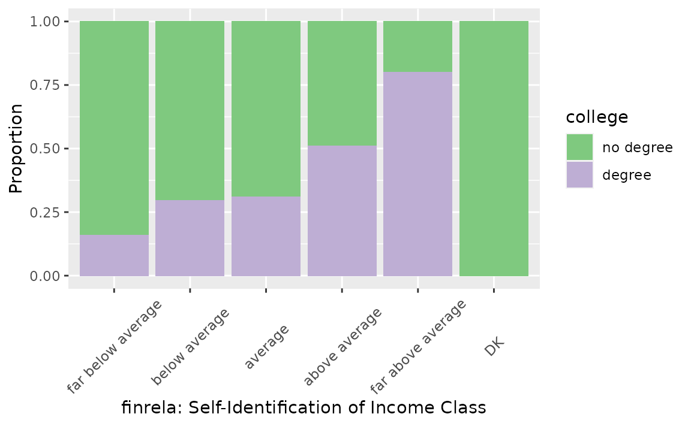
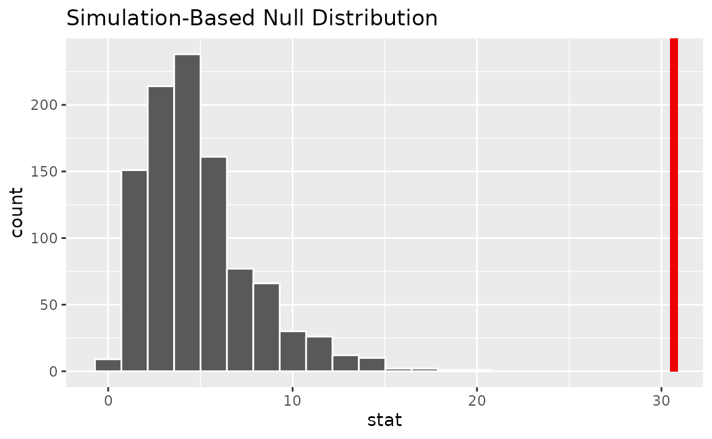
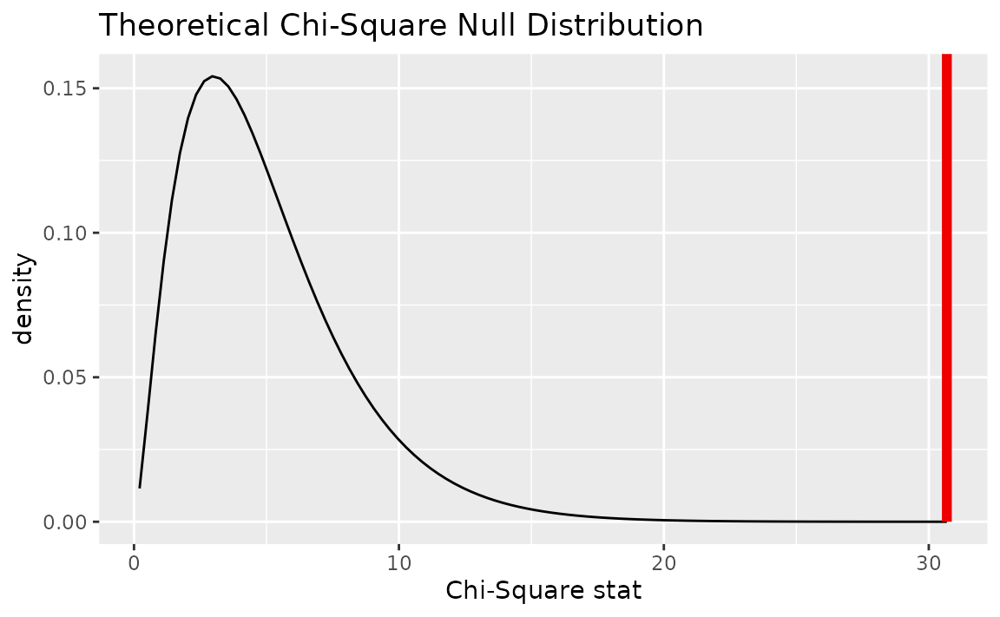
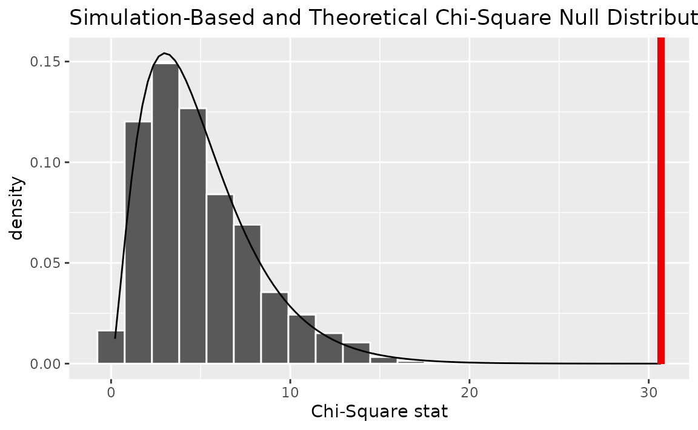
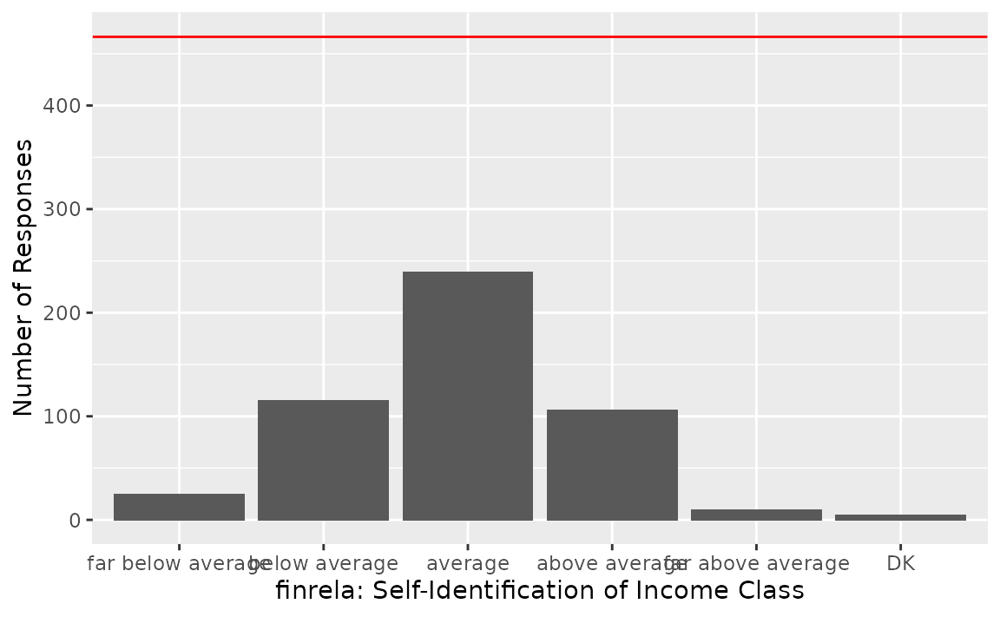
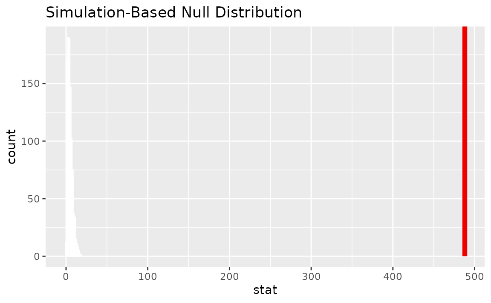

Introduction
In this vignette, we’ll walk through conducting a (chi-squared) test of independence and a chi-squared goodness of fit test using infer. We’ll start out with a chi-squared test of independence, which can be used to test the association between two categorical variables. Then, we’ll move on to a chi-squared goodness of fit test, which tests how well the distribution of one categorical variable can be approximated by some theoretical distribution.
Throughout this vignette, we’ll make use of the gss
dataset supplied by infer, which contains a sample of data from the
General Social Survey. See ?gss for more information on the
variables included and their source. Note that this data (and our
examples on it) are for demonstration purposes only, and will not
necessarily provide accurate estimates unless weighted properly. For
these examples, let’s suppose that this dataset is a representative
sample of a population we want to learn about: American adults. The data
looks like this:
dplyr::glimpse(gss)## Rows: 500
## Columns: 11
## $ year <dbl> 2014, 1994, 1998, 1996, 1994, 1996, 1990, 2016, 2000,…
## $ age <dbl> 36, 34, 24, 42, 31, 32, 48, 36, 30, 33, 21, 30, 38, 4…
## $ sex <fct> male, female, male, male, male, female, female, femal…
## $ college <fct> degree, no degree, degree, no degree, degree, no degr…
## $ partyid <fct> ind, rep, ind, ind, rep, rep, dem, ind, rep, dem, dem…
## $ hompop <dbl> 3, 4, 1, 4, 2, 4, 2, 1, 5, 2, 4, 3, 4, 4, 2, 2, 3, 2,…
## $ hours <dbl> 50, 31, 40, 40, 40, 53, 32, 20, 40, 40, 23, 52, 38, 7…
## $ income <ord> $25000 or more, $20000 - 24999, $25000 or more, $2500…
## $ class <fct> middle class, working class, working class, working c…
## $ finrela <fct> below average, below average, below average, above av…
## $ weight <dbl> 0.8960, 1.0825, 0.5501, 1.0864, 1.0825, 1.0864, 1.062…Test of Independence
To carry out a chi-squared test of independence, we’ll examine the
association between income and educational attainment in the United
States. college is a categorical variable with values
degree and no degree, indicating whether or
not the respondent has a college degree (including community college),
and finrela gives the respondent’s self-identification of
family income—either far below average,
below average, average,
above average, far above average, or
DK (don’t know).
This is what the relationship looks like in the sample data:

If there were no relationship, we would expect to see the purple bars reaching to the same height, regardless of income class. Are the differences we see here, though, just due to random noise?
First, to calculate the observed statistic, we can use
specify() and calculate().
# calculate the observed statistic
observed_indep_statistic <- gss %>%
specify(college ~ finrela) %>%
hypothesize(null = "independence") %>%
calculate(stat = "Chisq")The observed statistic is 30.6825. Now, we want to compare this statistic to a null distribution, generated under the assumption that these variables are not actually related, to get a sense of how likely it would be for us to see this observed statistic if there were actually no association between education and income.
We can generate() the null distribution in one of two
ways—using randomization or theory-based methods. The randomization
approach approximates the null distribution by permuting the response
and explanatory variables, so that each person’s educational attainment
is matched up with a random income from the sample in order to break up
any association between the two.
# generate the null distribution using randomization
null_dist_sim <- gss %>%
specify(college ~ finrela) %>%
hypothesize(null = "independence") %>%
generate(reps = 1000, type = "permute") %>%
calculate(stat = "Chisq")Note that, in the line specify(college ~ finrela) above,
we could use the equivalent syntax
specify(response = college, explanatory = finrela). The
same goes in the code below, which generates the null distribution using
theory-based methods instead of randomization.
# generate the null distribution by theoretical approximation
null_dist_theory <- gss %>%
specify(college ~ finrela) %>%
assume(distribution = "Chisq")To get a sense for what these distributions look like, and where our
observed statistic falls, we can use visualize():
# visualize the null distribution and test statistic!
null_dist_sim %>%
visualize() +
shade_p_value(observed_indep_statistic,
direction = "greater"
)
We could also visualize the observed statistic against the
theoretical null distribution. To do so, use the assume()
verb to define a theoretical null distribution and then pass it to
visualize() like a null distribution outputted from
generate() and calculate().
# visualize the theoretical null distribution and test statistic!
gss %>%
specify(college ~ finrela) %>%
assume(distribution = "Chisq") %>%
visualize() +
shade_p_value(observed_indep_statistic,
direction = "greater"
)
To visualize both the randomization-based and theoretical null
distributions to get a sense of how the two relate, we can pipe the
randomization-based null distribution into visualize(), and
further provide method = "both".
# visualize both null distributions and the test statistic!
null_dist_sim %>%
visualize(method = "both") +
shade_p_value(observed_indep_statistic,
direction = "greater"
)
Either way, it looks like our observed test statistic would be quite
unlikely if there were actually no association between education and
income. More exactly, we can approximate the p-value with
get_p_value:
# calculate the p value from the observed statistic and null distribution
p_value_independence <- null_dist_sim %>%
get_p_value(
obs_stat = observed_indep_statistic,
direction = "greater"
)
p_value_independence## # A tibble: 1 × 1
## p_value
## <dbl>
## 1 0Thus, if there were really no relationship between education and income, our approximation of the probability that we would see a statistic as or more extreme than 30.6825 is approximately 0.
To calculate the p-value using the true
distribution, we can use the pchisq function from base R.
This function allows us to situate the test statistic we calculated
previously in the
distribution with the appropriate degrees of freedom.
pchisq(observed_indep_statistic$stat, 5, lower.tail = FALSE)## X-squared
## 1.082e-05Note that, equivalently to the theory-based approach shown above, the
package supplies a wrapper function, chisq_test, to carry
out Chi-Squared tests of independence on tidy data. The syntax goes like
this:
chisq_test(gss, college ~ finrela)## # A tibble: 1 × 3
## statistic chisq_df p_value
## <dbl> <int> <dbl>
## 1 30.7 5 0.0000108Goodness of Fit
Now, moving on to a chi-squared goodness of fit test, we’ll take a
look at the self-identified income class of our survey respondents.
Suppose our null hypothesis is that finrela follows a
uniform distribution (i.e. there’s actually an equal number of people
that describe their income as far below average, below average, average,
above average, far above average, or that don’t know their income.) The
graph below represents this hypothesis:

It seems like a uniform distribution may not be the most appropriate description of the data–many more people describe their income as average than than any of the other options. Lets now test whether this difference in distributions is statistically significant.
First, to carry out this hypothesis test, we would calculate our observed statistic.
# calculating the null distribution
observed_gof_statistic <- gss %>%
specify(response = finrela) %>%
hypothesize(
null = "point",
p = c(
"far below average" = 1 / 6,
"below average" = 1 / 6,
"average" = 1 / 6,
"above average" = 1 / 6,
"far above average" = 1 / 6,
"DK" = 1 / 6
)
) %>%
calculate(stat = "Chisq")The observed statistic is 487.984. Now, generating a null
distribution, by just dropping in a call to generate():
# generating a null distribution, assuming each income class is equally likely
null_dist_gof <- gss %>%
specify(response = finrela) %>%
hypothesize(
null = "point",
p = c(
"far below average" = 1 / 6,
"below average" = 1 / 6,
"average" = 1 / 6,
"above average" = 1 / 6,
"far above average" = 1 / 6,
"DK" = 1 / 6
)
) %>%
generate(reps = 1000, type = "draw") %>%
calculate(stat = "Chisq")Again, to get a sense for what these distributions look like, and
where our observed statistic falls, we can use
visualize():
# visualize the null distribution and test statistic!
null_dist_gof %>%
visualize() +
shade_p_value(observed_gof_statistic,
direction = "greater"
)
This statistic seems like it would be quite unlikely if income class self-identification actually followed a uniform distribution! How unlikely, though? Calculating the p-value:
# calculate the p-value
p_value_gof <- null_dist_gof %>%
get_p_value(
observed_gof_statistic,
direction = "greater"
)
p_value_gof## # A tibble: 1 × 1
## p_value
## <dbl>
## 1 0Thus, if each self-identified income class was equally likely to occur, our approximation of the probability that we would see a distribution like the one we did is approximately 0.
To calculate the p-value using the true
distribution, we can use the pchisq function from base R.
This function allows us to situate the test statistic we calculated
previously in the
distribution with the appropriate degrees of freedom.
pchisq(observed_gof_statistic$stat, 5, lower.tail = FALSE)## [1] 3.131e-103Again, equivalently to the theory-based approach shown above, the
package supplies a wrapper function, chisq_test(), to carry
out Chi-Squared goodness of fit tests on tidy data. The syntax goes like
this:
chisq_test(
gss,
response = finrela,
p = c(
"far below average" = 1 / 6,
"below average" = 1 / 6,
"average" = 1 / 6,
"above average" = 1 / 6,
"far above average" = 1 / 6,
"DK" = 1 / 6
)
)## # A tibble: 1 × 3
## statistic chisq_df p_value
## <dbl> <dbl> <dbl>
## 1 488. 5 3.13e-103